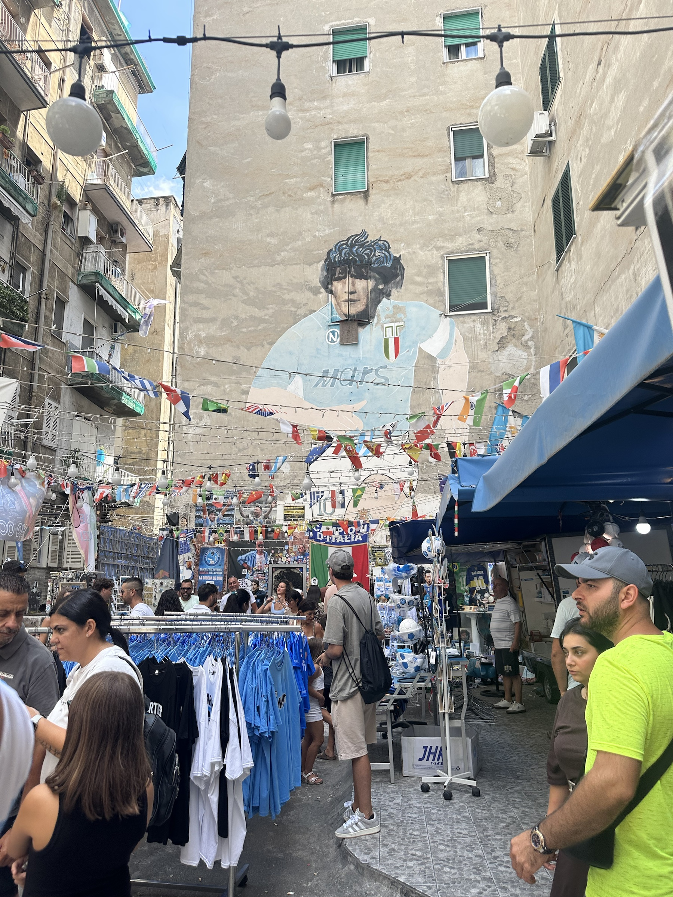
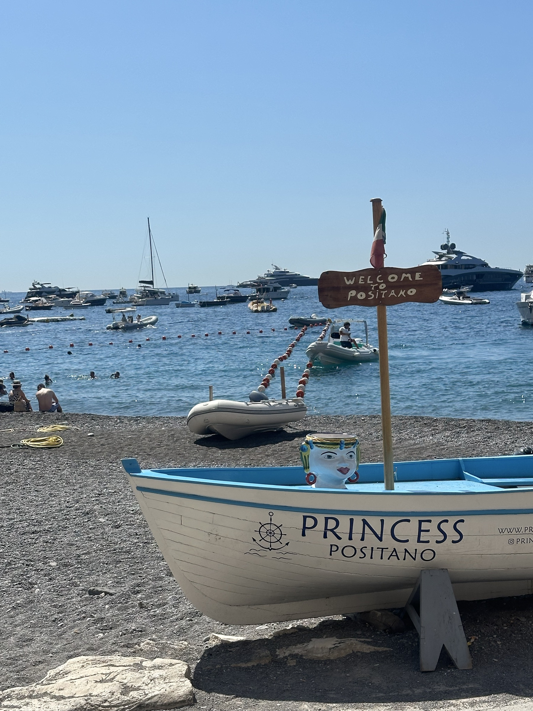

Inicio / Destino 05
Italia
Ruinas antiguas, ciudades costeras y expresiones populares narran las muchas capas de la identidad italiana.
Roma · Nápoles · Positano3 fotografíasFotos propias
Postales de Italia
Historia · Ciudad · Paisaje

Coliseo romano
Los arcos superpuestos del anfiteatro recuerdan la escala y la permanencia de la arquitectura de la antigua Roma.

Mural de Maradona
En las calles de Nápoles, la fachada se transforma en memoria colectiva y homenaje popular.

Positano
Las construcciones trepan por la ladera y forman un paisaje urbano inseparable del mar Mediterráneo.